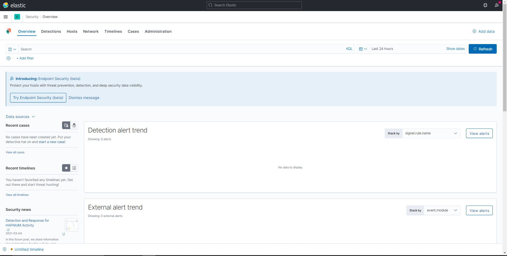
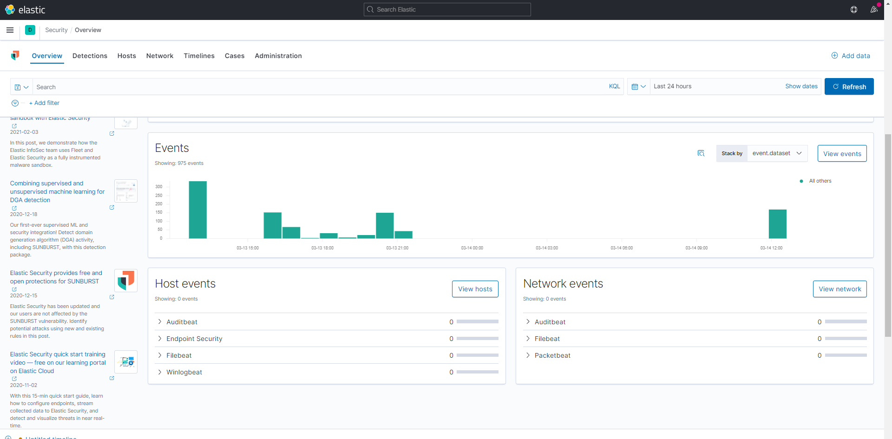

4 Winlogbeat
In this lab we will display Windows logs in our Kibana dashboard. The end results will look similar to the following screenshot:
Winlogbeat showing Windows logs in Kibana
4.1 Setup Winlogbeat
Just like in the labs for Elasticsearch, Kibana and Metricbeat, also Winlogbeat will be started from the Command Line. Make sure Elasticsearch and Kibana are running, both in their seperate Command Line sessions. Open a new Command Line and navigate to the directory where Winlogbeat is located.

Start the Command Line (Command Prompt) in Windows
cd winlogbeat-7.11.2-windows-x86_64
cd winlogbeat-7.11.2-windows-x86_64In my case, the main files of Winlogbeat are located in another folder called
winlogbeat-7.11.2-windows-x86_64. Therefore the two similar commands.
Use the dir command to get an overview of the files and folders in the main directory of Winlogbeat.
Files in the main Winlogbeat directory
Just like Metricbeat, we need to setup Winlogbeat if this is the first time we use this version on the computer.
winlogbeat setupJust like the setup of Metricbeat, the setup of Windows may take a little while.
Winlogbeat setup
When the setup is finished, we can start Winlogbeat:
winlogbeatStart Winlogbeat from the Command Line
No that we have started Winlogbeat, we want to initiate our dashboard for Windows logs in Kibana.
4.2 Initiate the Windows logs dashboard in Kibana
From the homescreen of Kibana, select the option Add data

Add data
From the list of pre-configured options select Windows Event Log
Windows Event Log from the pre-configured options
Since we already executed the options for the (initial) setup of Winlogbeat, we can ignore the steps descbribed.
We can verify if Elasticsearch has already received some data of our running Winlogbeat instance in the Command Line. Select the button Check data to let Kibana check if we already have some data.
We get a message if Elasticsearch has succesfully received our data.
Kibana Winlogbeat check data
Next click the SIEM app button to explore our data.
Explore data SIEM
Congratulations, we are now presented with our Windows logs files in the dashboard. Make sure the filters are properly set. You can also scroll down the page in order to view all the visualisations.
 
When we drill down the different visualisations we also get different tables that show our Windows logs. For example, you can click View Events.
Windows logs
4.3 Check out the Windows logs in the Elasticsearch index
Let’s checkout the raw Windows logs in our Elasticsearch index. In the Kibana menu, navigate to Dev Tools.
In the Editor, execute the Elasticsearch request to get an overview of our current indices.
The list with indices contains an index staring with winlogbeat (followed by the timestamp of the initation of the Winlogbeat instance).
Let’s checkout what a Window log line indexed in Elasticsearch looks like
A Windows log indexed in Elasticsearch
The _source field contains the original Windows log line.
4.4 Index Patterns en Discover
Just like Metricbeat, we have the possiblity to discover the Windows logs provided by Windlogbeat. This requires us to also define an Index Pattern for our winlogbeat index. In see above we can recall these steps.
Discover Windows Logs